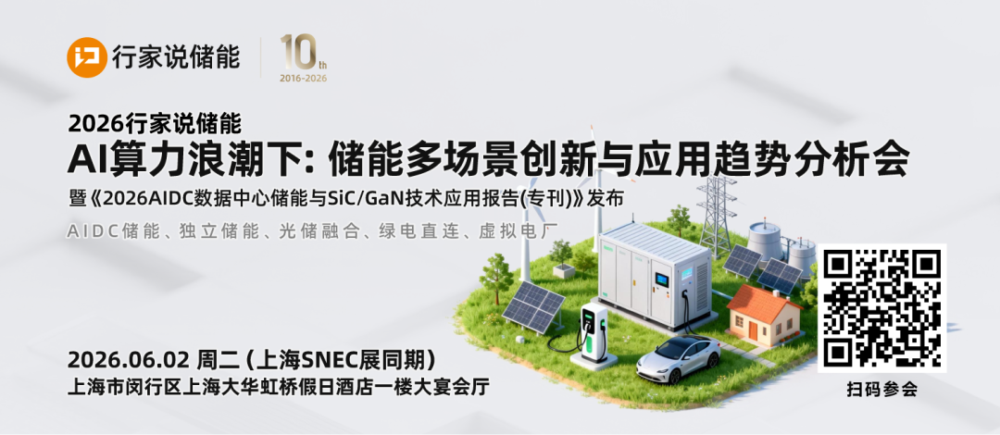
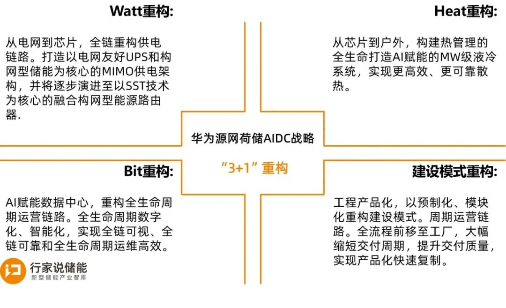
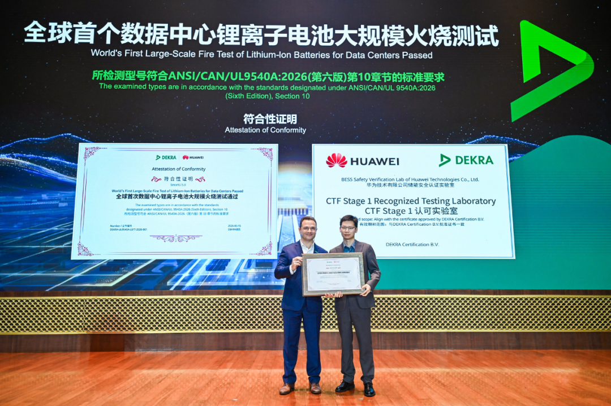
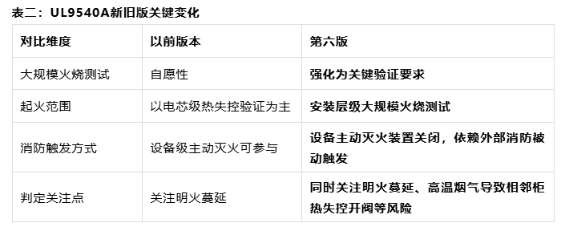
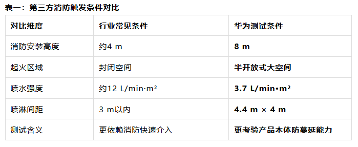
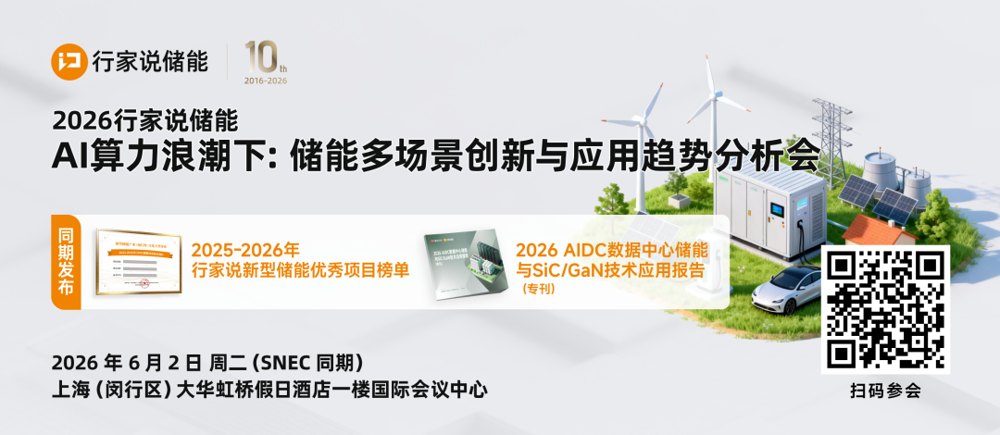
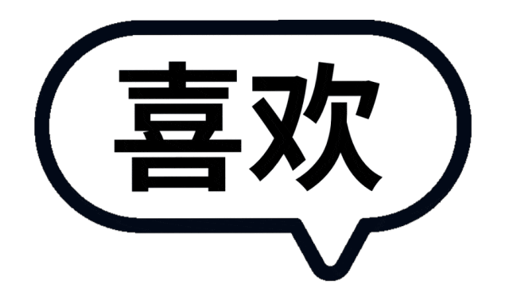

AIDC火了，但电费和供电压力更火。
华为数字能源日前放出重磅消息：正式推出“源网荷储”AIDC全栈战略，并于昨日（5月26日）公布了战略细节，同步给出了一张含金量极高的锂电安全证书。
****▍华为的AIDC时代“源网荷储”逻辑
传统数据中心的备电逻辑很简单：平时闲着，停电再上。但AIDC完全不一样——GPU集群的功耗像过山车，一次训练中断可能损失上百万美金，绿电进来后波动更大，静态备电根本接不住。
华为这次明确的“源网荷储”架构，本质上是把发电、电网、负荷、储能四个环节用数字孪生技术捏合成一个实时协同的系统。其中，储能被推到核心位置，不再是角落里的“备胎”，而是变成了主动调节节点：削峰填谷降低电费账单、平抑GPU负载波动防止算力抖动、消纳光伏风电等绿电、甚至作为虚拟电厂跟电网做双向互动。

战略很宏大，但安全才是底线。所有上层调度能力都建立在一个前提上——储能系统必须是可靠的、可预测的、不会成为风险源的。
由此，华为同步给出了一张含金量极高的安全证书：SmartLi 5.0顺利通过数据中心锂电柜ANSI/CAN/UL9540A:2026大规模火烧测试，并获得DEKRA德凯颁发的符合性证书，华为也由此成全球首家通过这一标准的数据中心锂离子电池制造商。

*▍全球首个“地狱难度”火烧测试*
这不是普通测试。ANSI/CAN/UL9540A:2026第六版相比旧版有两个关键变化：大规模火烧测试从“自愿”变成“强制要求”，而且设备自带的主动灭火装置要关掉，完全靠外部消防被动触发。简单说，就是不让电池“自己救自己”，只看它在真实火灾场景下扛不扛得住。

华为还主动给自己加了难度。行业常见的测试条件是消防安装高度约4米、封闭空间、喷水强度每平方米每分钟约12升、喷淋间距3米以内。华为的条件则是：8米层高、半开放空间、喷水强度降到3.7升、喷淋间距拉到4.4米×4米。水量不到常见水平的三分之一，空间更大更难触发，喷头更稀——相当于用更差的外部条件，去考验电池自身的抗风险能力。

实测过程也很极端：触发柜被整包过充叠加外部人工强制点火，刻意绕开了产品常规防护屏障，烧了将近2个小时充分热失控。结果隔壁目标柜没有出现火势蔓延、高温烟气没有导致相邻目标柜电芯异常开阀、停水之后没有复燃，而且目标柜结构完好，监测保护系统可以正常上下电，温度异常告警等记录完整可导出。
翻译成数据中心业主关心的语言：就算出了极端事故，热失控也被锁在单一柜体里，不会变成整个机房的风险。
*▍行家说储能总结：为什么华为AIDC战略这件事值得关注？*
第一，华为这次不是讲概念，是交作业。“源网荷储”战略围绕“3+1”重构给出了明确的落地路径——Watt重构（MIMO供电架构+Power POD）、Heat重构（AI液冷系统+IT POD）、Bit重构（全生命周期智能化）、建设模式重构（工程产品化）。对互联网大厂、运营商、第三方IDC来说，这意味着可以按图索骥做选型评估了。
第二，测试验证了战略的安全底座。这件事有两层含义：一是回答了业主最大的顾虑——“万一出事不会连累整个机房”，让储能C位变得可接受；二是证明了高安全锂电可以做到“越安全，对建筑消防的约束越少”，不需要为了用锂电去改造层高、加密喷淋、拉大间距。
第三，认证标准正在升级。ANSI/CAN/UL9540A:2026目前已被美国国家消防协会NFPA 855、国际规范委员会（ICC）等权威规范采纳为核心准入依据，其将安装层级的大规模火烧测试推到了关键位置，评判标准从“电芯不起火”转向“起火后不蔓延、不连累邻居”。华为是第一个通过的，但这不会是个例，接下来，“有没有通过安装层级火烧测试”很可能成为AIDC锂电选型的硬门槛。
第四，战略卡位清晰。华为这次释放的信号很明确：不要把安全寄托在建筑消防上，产品本身就要做到“烧不穿、炸不扩”。对互联网大厂、运营商、第三方IDC来说，这很可能成为新一轮锂电备电选型的关键分水岭。
总的来说，华为这次做了两件事——把“源网荷储”从战略变成了可交付的产品清单，同时用一场“地狱难度”测试给这个战略配了一把安全锁。
**

***往期精选：***



让更多人看到有价值的信息!